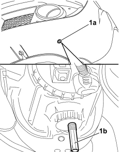

5540D38 FOG LIGHT BEAM - ADJUST
- Path
- Procedures > 55 ELECTRICAL EQUIPMENT > 5540 EXTERIOR LIGHTING > 5540D FOG LIGHTS > 5540D38 FOG LIGHT BEAM - ADJUST
- Kind
- repair procedure (removal / refitting; the operation number is the code)
- Applies to
- engines: 1.4 8v, 1.6 16v, 1.3 JTD 16V, 1.9 JTD 8V; all production periods
- Interactive page
- https://sloeber94.github.io/elrnDB-fDbl/en/#/223000171
Applies to: engines: 1.4 8v, 1.6 16v, 1.3 JTD 16V, 1.9 JTD 8V; production: da 12/03; only with equipment: MY 2005
Position the vehicle complete with spare wheel, tools, fluids, fuel reserve and with the driver on board.
Check that the tyre inflation pressure is correct.
Place the headlamp alignment control switch in position "0".
1. Switch the fog lights on and, working via the opening (1a) in the lower part of the bumper, adjust the adjustment pin (1b) to position the headlamp so that on a screen positioned 10 metres away the demarcation line is lower than the reference centre of the fog lights equal to the value recommended for the dipped headlamp light beam for the vehicle in question plus 1/3 of the height of the centre of the fog light from the ground.

Applies to: engines: 1.4 8v, 1.6 16v, 1.3 JTD 16V, 1.9 JTD 8V; production: da 12/03; only with equipment: MY 2005
If the angle is such that the beam hits the ground before the screen, correct the alignment upwards so that the demarcation line hits the ground at the point where the screen is, i.e. 10 metres from the front of the vehicle.
On a horizontal plan the beams should be aligned as recommended for the main beam headlamps, with the exception of pre-adjusted headlamps.